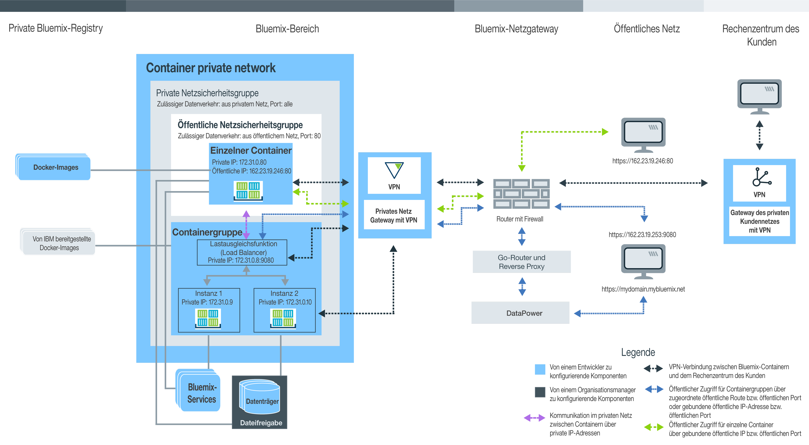

Verwendung von einzelnen und skalierbaren Containern planen
• Bluemix-Organisation für einzelne Container und skalierbare Containergruppen verwalten
• Namensbereich für Ihre private Bluemix-Registry einrichten
• Kontingent und verfügbare Bluemix-Kontotypen
• Persistenten Speicher einrichten
• Einzelne Container und skalierbare Containergruppen in IBM Bluemix Container Service erstellen
• Bluemix-GUI, -CLI oder -REST-API
• Öffentliche IBM Images, Docker Hub-Images und private Images
• Einstellungen für private Containernetze
• Einstellungen für das öffentliche Netz
• Integration von Bluemix-Services
• Optionen für persistenten Datenspeicher
• Containertypen
• Überwachungs- und Protokollierungsoptionen
Erklärung von Benutzerrollen
Container werden von Organisationsmanagern und Containerentwicklern verwaltet. Die folgende Abbildung enthält eine Beispielcontainerkonfiguration einer Organisation. Die Komponenten, die vom Organisationsmanager oder vom Entwickler des Containers konfiguriert werden können, sind hervorgehoben. 
In den Unterabschnitten in diesem Abschnitt finden Sie Informationen zu den einzelnen Komponenten, zu den Entscheidungen, die Sie treffen können, und zu den möglichen Konfigurationen. An einigen dieser Konfigurationen können nach der Erstellung eines Containers keine Änderungen mehr durchgeführt werden. Wenn Sie sich im Vorfeld über diese Konfigurationen informieren, wird es Ihnen leichter fallen sicherzustellen, dass dem Entwicklerteam alle Ressourcen wie Hauptspeicher, Plattenspeicherplatz und IP-Adressen zur Verfügung stehen und das Organisationskontingent umfassend genutzt wird.Bluemix-Organisation für IBM Bluemix Container Service verwalten
In Bluemix können Sie Organisationen verwenden, um die Onlinezusammenarbeit unter Teammitgliedern zu ermöglichen und die logische Gruppierung von Cloudressourcen in einem Projekt zu vereinfachen. Jeder Organisation wird ein Organisationsmanager zuwiesen, der für die Einrichtung der Entwicklungsumgebungen (Bereiche) verantwortlich und Teammitgliedern den Zugriff auf die Cloud-Ressourcen erteilen muss, die für die erfolgreiche Erstellung von Containern für ihre Apps nötig sind. Diese Konfiguration schließt die Zuweisung von öffentlichen IP-Adressen, Datenspeicher und Containerspeicher ein. Als Organisationsmanager können Sie außerdem das aktuelle Kontingent und die aktuelle Belegung von Cloudressourcen anzeigen und bei Bedarf entsprechende Anpassungen dieser Werte vornehmen.
- Weisen Sie Organisationsmanager zu, indem Sie einem Benutzer die Rolle Manager innerhalb der Organisation geben.
- Weisen Sie Containerersteller zu, indem Sie einem Benutzer die Rolle Entwickler oder Prüfer im Bereich geben.
Namensbereich Ihrer Organisation für Ihre private Bluemix-Registry festlegen
Um private Images für IBM Bluemix Container Service speichern und verwalten zu können, muss jede Organisation ihre eigene private Docker-Image-Registry in Bluemix einrichten. Der Name dieser privaten Registry wird als Namensbereich bezeichnet und muss in Bluemix eindeutig (einmalig) sein.
Berücksichtigen Sie bei der Auswahl eines Namensbereichs für Ihre Organisation die folgenden Regeln.
- Ihr Namensbereich muss in Bluemix eindeutig (einmalig) sein.
- Ihr Namensbereich kann eine Länge von 4-30 Zeichen haben.
- Ihr Namensbereich muss mit einem Buchstaben oder einer Ziffer beginnen.
- Ihr Namensbereich darf nur Kleinbuchstaben, Ziffern und Unterstriche (_) enthalten.
Führen Sie in der Bluemix-GUI die folgenden Schritte aus.
Führen Sie über die Befehlszeilenschnittstelle (CLI) nach der erfolgten Anmeldung bei IBM Bluemix Container Service den folgenden Befehl aus:
Namensbereich für Ihre Organisation abrufen
Falls bereits ein Namensbereich für Ihre Organisation festgelegt ist, können Sie ihn über die Bluemix-GUI oder die Befehlsschnittstelle (CLI) abrufen.
Führen Sie in der Bluemix-GUI die folgenden Schritte aus.
Melden Sie sich über die Befehlszeilenschnittstelle (CLI) bei IBM Bluemix Container Service an und führen Sie den folgenden Befehl aus.
Kontingent und Bluemix-Konten
Für jede Organisation in Bluemix ist ein voreingestellter Wert für den Containerspeicher, öffentliche IP-Adressen, Dateifreigaben und die Anzahl von Services festgelegt, die von allen Bereichen der Organisation gemeinsam genutzt werden. Die voreingestellten Werte werden als Kontingente bezeichnet.
Bluemix-Kontotypen
| Kontotyp | Beschreibung |
|---|---|
| Kostenlose Testversion | Kostenlose Testversionen für einzelne und skalierbare Container sind nicht verfügbar. Lesen Sie die Informationen zum Cluster-Management und zur Migration auf Kubernetes in IBM Bluemix Container Service unter Bluemix Public. |
| Nutzungsabhängig | Wenn Sie sich für ein nutzungsabhängiges Konto anmelden, zahlen Sie lediglich für die Bluemix-Ressourcen, die Sie verwenden. |
| Abonnement | Wenn Sie sich für ein Abonnementkonto anmelden, verpflichten Sie sich zu einer monatlichen Mindestausgabe und erhalten einen Abonnementnachlass, der auf diese Mindestgebühr angewendet wird. Darüber hinaus bezahlen Sie auch für jegliche Nutzung, die die monatliche Mindestausgabe überschreitet. |
| Bluemix Dedicated | Mit Bluemix Dedicated müssen Sie sich für eine Mindestlaufzeit von einem Jahr anmelden. Die während dieses Zeitraums monatlich anfallenden Kosten richten sich nach den lokalen Services, die Sie wünschen, zuzüglich einem Abonnementkonto, über das Sie Zugriff auf alle öffentlichen Services erhalten. |
| Bluemix Local | Mit Bluemix Local müssen Sie sich für eine Mindestlaufzeit von einem Jahr anmelden. Die während dieses Zeitraums monatlich anfallenden Kosten richten sich nach den lokalen Services, die Sie wünschen, zuzüglich einem Abonnementkonto, über das Sie Zugriff auf alle öffentlichen Services erhalten. |
Standardkontingent bei gebührenpflichtigen Konten
| Ressource | Kontingentbeschränkungen bei Benutzern mit einem gebührenpflichtigen Konto |
|---|---|
| Öffentliche IP-Adressen | 64 |
| Containerspeicher | 64 GB Anmerkung: Jeder Container in Ihrem Bereich trägt zur Nutzung des Kontingents bei, unabhängig davon, ob der
Container aktiv ist oder nicht. Zum Freigeben von Speicher müssen Sie nicht genutzte Container entfernen.
|
| Dateifreigaben | 10 Dateifreigaben |
| Container und Containergruppen | Unbegrenzte Zahl Anmerkung: Die Größe Ihrer Container und Containergruppen wird zwar auf den Speichergrenzwert für Container angerechnet, Sie sind jedoch nicht auf eine bestimmte Anzahl von Containern beschränkt.
|
| Images | 25 Anmerkung: Die IBM Images werden nicht auf den Grenzwert für Images in
Ihrer privaten
Bluemix-Registry
angerechnet.
|
| Bereiche | Unbegrenzte Zahl Anmerkung: Jeder Bereich erfordert mindestens 2 öffentliche IP-Adressen und 2 GB
Containerspeicher, die automatisch zugeordnet werden, wenn
Sie sich bei einem neuen Bereich anmelden und versuchen, ihn mit
IBM
Bluemix Container Service zu verwenden.
Diese Ressourcen werden zwar auf Ihr Kontingent angerechnet, aber Sie sind nicht auf eine bestimmte Anzahl von Bereichen beschränkt.
|
Kontingent einem Bereich zuordnen
- Wählen Sie in der Anzeige 'Organisationen verwalten' bei Ihren Kontodetails eine Organisation aus.
- Sehen Sie sich im Abschnitt 'Kontingent' die Details für Container an.
- Ändern Sie in der Tabelle Kontingentzuordnung das für jeden Bereich zugeordnete Kontingent, indem Sie auf die Schaltfläche Bearbeiten klicken.
- Speichern Sie die Änderungen, indem Sie auf die Schaltfläche Speichern klicken.
Tipps zur Maximierung der Verwendung Ihres Kontingents
- Stellen Sie sicher, dass Sie Container entfernen, die nicht verwendet werden, damit ihre Konfigurationen nicht in die Zählung Ihres Kontingents eingehen. Weitere Informationen finden Sie unter Einzelne Container entfernen, Containergruppen entfernen und Multi-Container-App entfernen.
- Binden Sie eine öffentliche IP-Adresse keinesfalls an Ihren Container, wenn über das Internet keinesfalls Zugriff auf Ihren Container möglich sein soll.
- Um die Verwendung öffentlicher IP-Adressen zu verringern, können Sie anstelle eines einzelnen Containers Containergruppen verwenden. Containergruppen verwenden eine Route für den öffentlichen Zugriff, der nicht in das Kontingent für IP-Adressen eingeht. Weitere Informationen finden Sie unter Langfristige Services als Containergruppen über die Bluemix-GUI ausführen.
Persistenter Datenspeicher
Der Organisationsmanager kann Dateifreigaben mit bestimmten Speichergrößen und IOPS-Werten erstellen, um den Speicheranforderungen des Bereichs gerecht zu werden. Dateifreigaben können in Größen von 20 GB bis 12 TB und mit 0,25, 2 oder 4 E/A-Operationen pro Sekunde (IOPS) pro GB erstellt werden. Die Dateifreigabegröße in Relation zur Anzahl der E/A-Operationen pro Sekunde pro GB wirkt sich auf die Geschwindigkeit aus, mit der Daten aus dem Containerdatenträger gelesen und in den Datenträger des Containers geschrieben werden können.
Container mit IBM Bluemix Container Service in Bluemix erstellen
Um mit IBM Bluemix Container Service in Bluemix Container erstellen zu können, die dann Ihre App ausführen, müssen Ihnen Entwicklerberechtigungen für einen Bereich der Organisation erteilt worden sein. Als Entwickler von Apps ist ein wichtig, die Beziehungen von Containerkomponenten untereinander zu kennen und zu wissen, wie Sie die Konfiguration eines Containers so ändern können, dass dieser die funktionalen und nicht funktionalen Anforderungen Ihrer Organisation erfüllt.
Bluemix-GUI, Befehlszeile und REST-API
Wenn Sie beabsichtigen, mit IBM Bluemix Container Service zu arbeiten, können Sie die Bluemix-GUI verwenden, die Befehlszeilenschnittstelle (CLI) installieren oder HTTP-Anforderungen an die REST-API senden, um auf IBM Bluemix Container Service zuzugreifen.
Die Mehrzahl der Tasks in IBM Bluemix Container Service kann sowohl über die Bluemix-GUI als auch über die Befehlszeilenschnittstelle ausgeführt werden. Es gibt jedoch Tasks, deren Ausführung nur über die Bluemix-GUI oder nur über die Befehlszeilenschnittstelle (CLI) möglich ist. Rechnen Sie also damit, dass Sie bei der Verwaltung Ihrer Container mit beiden arbeiten werden.
Wenn Sie weder die Bluemix-GUI noch die Befehlszeilenschnittstelle verwenden wollen, können Sie HTTP-Anforderungen direkt an den IBM Bluemix Container Service-API-Server senden, um Ihre Container mit REST zu verwalten.
Die folgende Tabelle enthält alle containerbezogenen Tasks, für die die Bluemix-GUI, die IBM Bluemix Container Service-CLI oder die REST-API benötigt wird. Tasks, die nicht aufgelistet sind, können mit allen Methoden ausgeführt werden.| Task | GUI | CLI (Befehlszeilenschnittstelle) | API |
|---|---|---|---|
| Sicherheitslücken bei Images überprüfen |  |
||
| Images mit Push-Operation in Registry übertragen | |
|
|
| Images mit Pull-Operation aus Registry extrahieren | |
||
| Images aus Docker Hub kopieren | |
||
| Kontingentzuordnung ändern | |
||
| Organisations- und bereichsbezogenes Kontingent abrufen | |
||
| Detaillierte Protokolldaten anzeigen | |
||
| Weitere Protokolle angeben | |
||
| Protokolle anpassen | |
||
| Bei einem aktiven Container anmelden | |
||
| Docker Compose verwenden | |
||
| Datenträger in einem Bereich auflisten | |
|
|
| Dateien auf einen Datenträger schreiben | |
||
| Datenträger löschen | |
|
|
| Systemnachrichten abrufen | |
CLI installieren
Installieren und konfigurieren Sie Ihre IBM Bluemix Container Service-CLI, damit Sie Ihre Container über die CLI verwalten können.
Container über die REST-API verwalten
Verwenden Sie die IBM Bluemix Container Service-API, um unter Verwendung von REST mit Ihren einzelnen Containern und Containergruppen zu arbeiten.
Öffentliche IBM Images, Docker Hub-Images und private Images
Ein Container-Image bildet die Grundlage für die Erstellung eines jeden Containers. Ein Image wird auf der Grundlage einer Dockerfile erstellt. Hierbei handelt es sich um eine Datei, die Anweisungen zum Erstellen des Image und zum Erstellen von Artefakten wie einer App, der Konfiguration der App und ihren Abhängigkeiten enthält. Sie können einen Container als eine ausführbare Datei (.exe oder .bin) betrachten. Sobald Sie diese ausführbare App-Datei ausführen, erstellen Sie eine Instanz Ihrer App. Beim Ausführen eines Containers wird eine Containerinstanz aus dem Image erstellt. Container-Images werden in Ihrer privaten Bluemix-Registry gespeichert und können nur über die Befehlszeilenschnittstelle (CLI) hinzugefügt werden. Jedes Container-Image, das Sie verwendet wollen, muss sich in einer Registry befinden, bevor Sie einen Container aus ihr erstellen können.
- Öffentliche IBM Images
- Starten Sie mit einem der öffentlichen IBM Images, die IBM Bluemix Container Service bereitstellt (wie zum Beispiel IBM Liberty oder IBM Node-Images), um die Funktionen von IBM Bluemix Container Service zu testen. Anschließend können Sie eines dieser Images als übergeordnetes Image verwenden, Änderungen an der Dockerfile vornehmen und ein eigenes Image erstellen, das Ihren eigenen App-Code enthält.
- Images aus Docker Hub
- Kopieren Sie Images direkt aus Docker Hub in Ihre private Bluemix-Registry oder extrahieren Sie ein Image mit einer Pull-Operation aus Docker Hub, nehmen Sie lokal Änderungen an ihm vor und erstellen Sie es dann direkt in Ihrer Registry.
- Eigenes Image erstellen
- Wenn Sie über Container-Images verfügen, die Sie bereits in Ihrer lokalen Docker-Umgebung verwenden, können Sie diese Images mit einer Push-Operation in die private Bluemix-Registry verschieben, um sie in IBM Bluemix Container Service zu verwenden. Sie können auch Ihre eigene Dockerfile erstellen, den Build durchführen, sie lokal testen und dann mit einer Push-Operation an Ihre private Image-Registry übertragen.
Images in der Image-Registry anzeigen
Sie können alle Container-Images, die in Ihrer privaten Bluemix-Image-Registry verfügbar sind, über die Bluemix-GUI oder die Befehlsschnittstelle (CLI) anzeigen.
- Wählen Sie in der Bluemix-GUI den Katalog und anschließend Containers aus. Es werden Images, die von IBM bereitgestellt werden, und Images angezeigt, die von Ihnen zuvor mit einer Push-Operation in Ihre private Bluemix Registry übertragen wurden.
- Führen Sie über die Befehlszeilenschnittstelle den Befehl bx ic images aus.
Sicherheitslücken bei Images überprüfen
Wenn Sie Images zu Ihrer privaten Bluemix-Registry hinzufügen, werden diese von Vulnerability Advisor automatisch anhand der vom Organisationsmanager festgelegten Standardrichtlinien und einer Datenbank mit bekannten Ubuntu-Problemen überprüft. Vulnerability Advisor überprüft Inventarpakete, Konfigurationen, offene Ports und Docker-Metadaten. Wenn die Überprüfung abgeschlossen ist, können Sie eine Liste potenzieller Sicherheitslücken anzeigen und diese falls erforderlich beheben, bevor Sie das Image in einem Container verwenden. Abhängig von den Richtlinien, die vom Organisationsmanager festgelegt wurden, kann die Bereitstellung eines Containers aus diesem Image blockiert werden oder dem Benutzer wird eine Warnung angezeigt.
- Eine Liste der Sicherheitslücken bei Images finden Sie unter Imagebericht überprüfen.
- Informationen zum Einrichten angepasster Richtlinien finden Sie unter Organisationsrichtlinien überprüfen.
Tipps zu Dockerfile zum Verhindern von Containerausfällen
IBM Bluemix Container Service beinhaltet eine Reihe von Benutzerfunktionen für die Sicherheit von Containern und die Verwaltung von Cloudressourcen. Je nach Ihrer App müssen Sie möglicherweise zusätzliche Konfigurationsmaßnahmen für Ihre Dockerfile ausführen, um sicherzustellen, dass Ihre lokalen Container erfolgreich in Bluemix ausgeführt werden können.
- Verzögerungen beim Einrichten von Netzverbindungen berücksichtigen
- Beim Starten eines Containers richtet IBM Bluemix Container Service das private Containernetz ein und ordnet eine private IP-Adresse für den Container zu. Dieser Prozess kann einige Sekunden dauern. Wenn Ihre App beim Starten eine aktive Netzverbindung benötigt, stellen Sie sicher, dass der Vernetzungsprozess für IBM Bluemix Container Service abgeschlossen ist, indem Sie einen entsprechenden Inaktivierungsbefehl (sleep) zu Ihrer Dockerfile hinzufügen.
- Befehle für Prozesse mit langer Laufzeit verwenden
- Damit ein Container dauerhaft betriebsbereit bleibt, muss mindestens ein Prozess mit langer Laufzeit in das Container-Image eingeschlossen sein. Bei echo "Hello world" handelt es sich beispielsweise um einen Prozess mit kurzer Laufzeit. Wenn kein anderer Befehl im Image angegeben ist, fährt der Container nach der Ausführung des Befehls herunter. Um den Befehl echo "Hello world" in einen Prozess mit langer Laufzeit umzuwandeln, können Sie ihn beispielsweise mehrmals in Schleifen wiederholen lassen oder den Befehl echo in einen anderen Prozess mit langer Laufzeit in Ihrer App einschließen.
Einstellungen für das private Netz eines Containers in IBM Bluemix Container Service
Ein privates Netz zwischen Containern schafft eine isolierte und sichere Umgebung für die einzelnen Container und Containergruppen, die in einem Bereich ausgeführt werden. Container, die mit demselben privaten Netz verbunden sind, können unter Verwendung der privaten IP-Adressen Daten an andere Container im privaten Netz senden und von anderen Containern im privaten Netz empfangen. Container sind erst öffentlich verfügbar, nachdem ein öffentlicher Port und entweder eine öffentliche IP-Adresse für einzelne Container oder eine öffentliche Route für Containergruppen gebunden wurden.
- IBM Bluemix Container Service-Standardeinstellungen für private Netze
- Bei Bluemix ist jeder Bereich bereits mit einem privaten Netz zwischen Containern ausgestattet, das die standardmäßigen IBM Bluemix Container Service-Netzeinstellungen anwendet. Diese Einstellungen umfassen die automatische Einrichtung einer privaten Netzsicherheitsgruppe, die die Kommunikation zwischen Containern und Containergruppen im privaten Netz unter Verwendung einer privaten IP-Adresse ermöglicht. Wenn Sie einen Container oder eine Containergruppe in einem Bereich erstellen, wird dieser bzw. diese automatisch mit dem standardmäßigen privaten Netz von IBM Bluemix Container Service verbunden und es wird eine private IP-Adresse aus dem Teilnetz 172.31.0.0/16 zugeordnet. Nachdem eine private IP-Adresse zugewiesen wurde, können alle Container in demselben Netz unter Verwendung der privaten IP-Adresse des einzelnen Containers (bzw. bei Verwendung einer Containergruppe über die private IP-Adresse der Lastausgleichsfunktion für die Gruppe) sicher an allen Container-Ports kommunizieren. Eine Zuordnung von Container-Ports zu einem Host-Port ist nicht erforderlich.
- Virtuelles privates Netz für eine Verbindung der Container zu einem firmeneigenen Rechenzentrum
- Mit dem durch IBM® Virtual Private Network bereitgestellten VPN-Service können Sie die einzelnen Container und Containergruppen in einem privaten Containernetz in Bluemix mit dem Rechenzentrum eines Unternehmens sicher verbinden. IBM
VPN stellt einen sicheren End-to-End-Kommunikationskanal über das Internet bereit, der auf der standardisierten IPsec-Protokollsuite (IPsec - Internet Protocol Security) basiert. Das IPsec-Protokoll bietet Peerauthentifizierung auf Netzebene, Datenintegrität und Datenvertraulichkeit durch Verschlüsselung der Pakete, die zwischen den VPN-Endpunkten ausgetauscht werden. Um eine sichere Verbindung zwischen den Containern in Bluemix und dem Rechenzentrum des Unternehmens einrichten zu können, muss in Ihrem Rechenzentrum vor Ort ein IPsec-VPN-Gateway oder SoftLayer-Server installiert sein. Mit dem IBM
VPN-Service können Sie ein VPN-Gateway pro Bereich konfigurieren und bis zu 16 Verbindungen zu verschiedenen Zielen definieren.
Das Einrichten einer sicheren VPN-Verbindung zu Ihren Containern in Bluemix wird unter IBM VPN beschrieben.
Tipps zur Handhabung von Verzögerungen beim Einrichten von Netzverbindungen beim Start von Containern
Beim Starten eines Containers richtet IBM Bluemix Container Service das private Containernetz ein, stellt Containerports bereit und ordnet eine private IP-Adresse für den Container zu. Dieser Prozess kann einige Sekunden dauern. Wenn Ihre App beim Starten eine aktive Netzverbindung benötigt, ist das private Containernetz möglicherweise noch nicht vollständig eingerichtet. Dies kann zum Absturz der App führen. Ziehen Sie das Implementieren einer der folgenden Lösungen für die Handhabung von Verzögerungen beim Einrichten von Netzverbindungen in Betracht, um sicherzustellen, dass die Vernetzung von IBM Bluemix Container Service abgeschlossen ist, bevor die App gestartet wird.
- Fügen Sie einen Inaktivitätsbefehl (sleep) in Ihrer Dockerfile hinzu, der beim
Starten des Containers ausgeführt wird.
In der folgenden Beispiel-Dockerfile wartet der Container 60 Sekunden, bevor die App gestartet wird.
FROM sdelements/lets-chat:latest CMD (sleep 60; npm start) - Passen Sie denn Code Ihrer App so an, dass die aktive Netzkonnektivität geprüft wird, indem beispielsweise vor dem Starten der App ein Pingsignal an eine öffentliche IP-Adresse abgesetzt wird. Wenn das Pingsignal an die IP-Adresse fehlschlägt, inaktivieren Sie den Prozess für einige Sekunden und führen Sie ihn anschließend erneut aus. Wenn die IP-Adresse aufgelöst werden kann, starten Sie die App.
Einstellungen für das öffentliche Netz bestimmen
Standardmäßig steht dem privaten Netz jeder einzelne Container und jede Containergruppe in IBM Bluemix Container Service zur Verfügung. Unter Umständen ist für Ihre App jedoch der Zugriff über das Internet erforderlich oder Sie wollen auf Container in anderen Bereichen Ihrer Organisation zugreifen. In diesen Fällen müssen Sie Ihren Container öffentlich zugänglich machen. Abhängig von dem ausgewählten Containertyp gibt es verschiedene Verfahren, um einen Container allgemein zugänglich zu machen.
Einstellungen für das öffentliche Netz für einzelne Container und Docker Compose
Allen einzelnen Containern, die Sie in Ihrem Bereich erstellen, wird eine private IP-Adresse zugewiesen, mit der Sie auf die Container zugreifen können, allerdings nur vom privaten Netz aus. Die Kommunikation im privaten Netz wird durch die standardmäßige private Netzsicherheitsgruppe geschützt, die keinen Datenverkehr an ein öffentliches Netz und aus einem öffentlichen Netz zulässt. Wenn Sie Ihre App gegenüber dem öffentlichen Netz verfügbar machen möchten, müssen Sie einen Port öffentlich zugänglich machen und eine öffentliche IP-Adresse an Ihren Container binden.
Für einen Bereich, der an einen Container gebunden werden soll, müssen öffentliche IP-Adressen angefordert werden. Wird eine öffentliche IP-Adresse angefordert, wird dem Bereich eine beliebige Adresse aus dem Pool der öffentlichen IP-Adressen zugeordnet. Die IP-Adresse wird beibehalten, solange sie einem Bereich zugeordnet ist. Um eine öffentliche IP-Adresse an einen Container binden zu können, muss auch ein HTTP-Port über die Option -p des Befehls bx ic run zugänglich gemacht werden. Indem ein Port zugänglich gemacht wird, wird für Ihren Container eine öffentliche Netzsicherheitsgruppe erstellt, die das Senden und Empfangen von öffentlichen Daten nur über den zugänglich gemachten Port zulässt. Alle anderen öffentlichen Ports sind geschlossen und können nicht für den Zugriff auf Ihre App aus dem Internet verwendet werden.
Wie Anzahl der öffentlichen IP-Adressen, die für einen Bereich verfügbar sind, richtet sich nach dem Kontingent Ihrer Organisation.
bx ic ips- Im Bereich sind keine öffentlichen IP-Adressen verfügbar
- Ausgabe der Befehlszeilenschnittstelle (CLI):
IP Address Container ID - Optionen: Fordern Sie eine neue öffentliche IP-Adresse an und binden Sie sie an Ihren Container.
bx ic ip-requestbx ic ip-bind <IP-ADRESSE> <CONTAINER>
- Ausgabe der Befehlszeilenschnittstelle (CLI):
- Im Bereich ist eine öffentliche IP-Adresse verfügbar, die an keinen Container gebunden ist
- Ausgabe der Befehlszeilenschnittstelle (CLI):
IP Address Container ID 192.0.2.56 - Optionen: Binden Sie die öffentliche IP-Adresse an Ihren Container.
bx ic ip-bind <IP-ADRESSE> <CONTAINER>
- Ausgabe der Befehlszeilenschnittstelle (CLI):
- Im Bereich ist zwar eine öffentliche IP-Adresse verfügbar, die aber bereits an einen Container gebunden ist
- Ausgabe der Befehlszeilenschnittstelle (CLI):
IP Address Container ID 192.0.2.56 d7b4a167-8e51-4b16-b591-1a17cb7ee41f - Optionen:
- Heben Sie die Bindung der bereits gebundenen IP-Adresse an den Container auf und binden Sie die IP-Adresse an einen neuen Container.
bx ic ip-unbind <IP-ADRESSE> <CONTAINER>bx ic ip-bind <IP-ADRESSE> <CONTAINER> - Fordern Sie eine neue öffentliche IP-Adresse an und binden Sie sie an Ihren Container.
bx ic ip-requestbx ic ip-bind <IP-ADRESSE> <CONTAINER>
- Heben Sie die Bindung der bereits gebundenen IP-Adresse an den Container auf und binden Sie die IP-Adresse an einen neuen Container.
- Ausgabe der Befehlszeilenschnittstelle (CLI):
Einstellungen für das öffentliche Netz für Containergruppen
Soll Ihre Containergruppe im Internet zugänglich sein, müssen Sie einen Port zugänglich machen und eine öffentliche Route oder eine öffentliche IP-Adresse an die Containergruppe binden.
- Öffentliche Route mit Standarddomäne
- Eine öffentliche Route besteht aus einem Host- und Domänennamen und bildet die vollständige öffentliche URL, die Sie in das Adressfeld Ihres Web-Browsers eingeben müssen, um auf die Containergruppe zuzugreifen. Jede Route muss in Bluemix eindeutig (einmalig) sein.
Bei der Erstellung des Containers können Sie einen Hostnamen für Ihre Route auswählen, zum Beispiel meincontainerhost. Die Standardsystemdomäne ist AppDomainName und stellt bereits ein SSL-Zertifikat bereit, sodass Sie ohne weitere Konfiguration mit HTTPS auf Ihre Containergruppe zugreifen können.
Beispiel: https://meincontainerhost.AppDomainName
Anmerkung: Um eine öffentliche Route verwenden zu können, müssen Sie während der Erstellung für Ihre Containergruppe einen HTTP-Port zugänglich machen. Nur HTTP-Ports können öffentlich zugänglich gemacht werden. Pro Containergruppe kann lediglich ein öffentlicher Port zugänglich gemacht werden. Mehrere öffentliche Ports werden für eine Containergruppe nicht unterstützt. - Öffentliche Route mit angepasster Domäne
- Wenn Sie anstelle der Standarddomäne AppDomainName eine eigene angepasste Domäne verwenden möchten, müssen Sie die angepasste Domäne bei einem öffentlichen DNS-Server registrieren, die angepasste Domäne in Bluemix konfiguriere und dann die angepasste Domäne der Systemdomäne von Bluemix auf dem öffentlichen DNS-Server zuordnen. Nach der erfolgten Zuordnung der angepassten Domäne zur Bluemix-Systemdomäne werden Anforderungen für die angepasste Domäne an Ihre Anwendung in Bluemix weitergeleitet. Bei Erstellung einer angepassten Domäne darf der Domänenname keine Unterstreichungszeichen (_) enthalten.
Ziehen Sie zum Erstellen angepasster Domänen den Abschnitt Angepasste Domäne erstellen und verwenden zurate.
Wenn Sie die angepasste Domäne schützen möchten, laden Sie ein SSL-Zertifikat hoch, sodass auf die Containergruppen über HTTPS zugegriffen werden kann.
- Öffentliche IP-Adresse
- Sie können eine IP-Adresse auch binden, wenn Sie eine Containergruppe über die
Befehlszeile erstellen.
An einen Container kann nur eine öffentliche Route oder eine variable
IP-Adresse gebunden werden, jedoch nicht beides.
Um eine IP-Adresse aus einer Containergruppe zu entfernen, müssen Sie die
Containergruppe entfernen und die Gruppe erneut erstellen.
Beispiel für die Erstellung einer Containergruppe mit einer öffentlichen IP-Adresse:
bx ic group-create -p 9080 --ip 192.0.2.56 --name meine_containergruppe registry.DomainName/ibmliberty
Bluemix-Services für eine Verwendung mit Containern integrieren
Bluemix bietet verschiedene Services an, die Sie in Verbindung mit IBM Bluemix Container Service verwenden können, um Ihre App durch zusätzliche Funktionalität zu erweitern oder die Bereitstellung Ihrer App und die Verwaltung Ihrer Container zu vereinfachen.
- Wählen Sie in der Bluemix-Benutzerschnittstelle den Bluemix-Katalog aus.
- Führen Sie über die Befehlszeilenschnittstelle (CLI) den Befehl cf marketplace aus.
Informationen zu Services, die bei der Verwaltung von Containern hilfreich sind, können Sie in Services mit einzelne und skalierbare Container integrieren nachlesen.
Optionen für persistenten Datenspeicher
Legen Sie fest, an welcher Position die Daten, die die App erstellt, oder die Dateien, die zum Ausführen der App erforderlich sind, gespeichert werden sollen.
| Datenspeicheroptionen | Beschreibung | Das Datenvolumen, das gespeichert werden kann, ist begrenzt durch |
|---|---|---|
| Option 1: Daten zur Laufzeit in einem Container speichern | Bei dieser Option werden App-Daten nicht persistent gespeichert. Dem Container stehen lediglich zur Laufzeit Daten zur Verfügung. Bei der erneuten Erstellung eines Containers gehen sämtliche Daten verloren. | Größe des Containers |
| Option 2: Daten in einem Containerdatenträger speichern | Wenn Sie einen Datenträger in Docker anhängen, wird
der Datenträger an Ihr lokales Dateisystem angehängt. In
IBM
Bluemix Container Service ist der Zugriff auf den Rechenhost
eingeschränkt, sodass Sie Hostverzeichnisse nicht an einen Container anhängen können. Stattdessen werden
organisationsbezogene Datenträger verwendet, um Daten zwischen Containerneustarts zu erhalten. Datenträger
werden
auf isolierten Dateifreigaben gehostet, die App-Daten sicher speichern und
den Dateizugriff und Dateiberechtigungen verwalten.
Aufgrund dieser Isolierung muss Benutzern ohne Rootberechtigung innerhalb des Containers Schreibberechtigung für den angehängten Datenträger erteilt werden. Bei dieser Option können Sie Daten zwischen den Neustarts von Containern persistent speichern, auf diese Daten zugreifen und Daten innerhalb der Container in einem Bereich gemeinsam nutzen. Beim Löschen eines Containers wird der zugeordnete Datenträger nicht entfernt. Anmerkung: Um
einen Datenträger an einen Container anhängen zu können, müssen Sie zunächst einen
Datenträger erstellen. Weitere Informationen hierzu finden Sie unter
Datenträger über die
Bluemix-GUI
erstellen.
|
Größe der Dateifreigabe, die den Datenträger hostet |
| Option 3: Container mit einer lokalen Datenbank verbinden | Bei dieser Option können Sie Daten mithilfe einer geschützten VPN-Verbindung zwischen Ihren Containern in der Cloud und Ihrer lokalen Umgebung in einer vorhandenen lokalen Datenbank persistent speichern und auf diese Daten zugreifen. | Festplattenspeicher, der der lokalen Datenbank zur Verfügung steht |
| Option 4: Bluemix-Datenbankservice an den Container binden | Bei dieser Option können Sie unter Verwendung eines Datenbankservice, der mit Ihrem Container in der Cloud verbunden ist, Daten persistent speichern und auf diese Daten zugreifen. Die meisten Bluemix-Datenbankservices stellen Plattenspeicher für ein geringes Datenvolumen gebührenfrei zur Verfügung, damit Sie dessen Funktionen testen können. | Datenbankservice und ausgewählter Plan |
Zugriff von Benutzern ohne Rootberechtigung auf Containerdatenträger in Bluemix
Bei IBM Bluemix Container Service ist die Funktion für Benutzernamensbereiche für Docker Engine aktiviert. Für Benutzernamensbereiche wird eine Isolationsfunktion bereitgestellt, d. h. der Rootbenutzer kann weder auf andere Container noch auf den Rechenhost zugreifen. Datenträger befinden sich jedoch auf externen NFS-Dateifreigaben außerhalb der Rechenhosts für Container. Die Datenträger sind so konfiguriert, dass der Rootbenutzer im Container erkannt wird. Da sich die Datenträger jedoch außerhalb des Containers befinden, können sie die Benutzernamensbereiche nicht erkennen.
Bei einigen Anwendungen ist nur der Rootbenutzer innerhalb des Containers registriert. In vielen Anwendungen wird jedoch ein Benutzer ohne Rootberechtigung angegeben, der in den Container-Mountpfad schreibt. Wenn Sie eine Anwendung erstellen, in der ein Benutzer ohne Rootberechtigung die Schreibberechtigung für den Datenträger benötigt, müssen Sie die folgenden Prozesse in Ihrer Dockerfile und in Ihrem Script für den Einstiegspunkt hinzufügen:
- Einen Benutzer ohne Rootberechtigung erstellen
- Den Benutzer temporär zu Rootgruppe hinzufügen
- Ein Verzeichnis mit den entsprechenden Benutzerberechtigungen im Datenträger-Mountpfad erstellen
Weitere Informationen finden Sie im Abschnitt zur Erstellung einer eigenen Dockerfile mit den korrekten Berechtigungen für Benutzer ohne Rootberechtigung.
Containertypen
Entscheiden Sie vor dem Erstellen eines Containers mit IBM Bluemix Container Service, welchen Typ von Container Sie benötigen. IBM Bluemix Container Service bietet verschiedene Ansätze für die Erstellung von Containern in der Cloud. Für welchen Ansatz Sie sich entscheiden, hängt von den Anforderungen und Abhängigkeiten der App ab, die in Ihrem Container ausgeführt wird.
Einzelner Container
Ein einzelner Container in IBM Bluemix Container Service ist mit einem Container vergleichbar, den Sie in Ihrer lokalen Docker-Umgebung erstellen. Einzelne Container stellen eine gute Möglichkeit dar, erstmals mit IBM Bluemix Container Service zu arbeiten, und zu erfahren, wie Container in der IBM Cloud funktionieren, und die von IBM Bluemix Container Service bereitgestellten Funktionen kennenzulernen. Sie können einzelne Container außerdem beim Entwicklungsprozess einer App verwenden oder zum Durchführen einfacher App-Tests. Da ein einzelner Container erneut gestartet werden kann und nicht für das Hosting eines lange laufenden Prozesses vorgesehen ist, müssen Sie eine Containergruppe für alle Anwendungen verwenden, die eine hohe Verfügbarkeit voraussetzen.
- Die Größe des Image ist von erheblicher Bedeutung. Je kleiner das Image, desto schneller erfolgt die Bereitstellung.
- Nach den ersten paar Bereitstellungen eines Image verbessert sich die Geschwindigkeit bei der Bereitstellung. Am Anfang muss das Image in die Registry auf dem Host heruntergeladen werden. Nachfolgende Bereitstellungen werden schneller ausgeführt.
- Die Einrichtung des Netzbetriebs kann einige Minuten dauern.
- Ein einzelner Container wird aufgrund der Routingkonfiguration für Gruppen schneller als eine Containergruppe bereitgestellt.
- Bereitstellungen mit verlinkten Containern werden aufgrund der herzustellenden Verbindungen möglicherweise nicht so schnell wie andere Bereitstellungen ausgeführt.
Informationen zum Erstellen eines einzelnen Containers über die Bluemix-GUI finden Sie unter Kurzfristige Tasks als einzelne Container ausführen.
Wie Sie einen einzelnen Container über die Befehlszeilenschnittstelle (CLI) erstellen, erfahren Sie in Kurzfristige Tasks als einzelne Container über die Befehlszeilenschnittstelle (CLI) ausführen.
Containergruppen
Eine Containergruppe setzt sich aus mehreren einzelnen Containern zusammen, die alle aus demselben Container-Image erstellt werden und daher gleich konfiguriert sind.
Eine Containergruppe bietet zusätzliche kostenlose Optionen für die Hochverfügbarkeit Ihrer App.
- Integrierter Lastausgleich
- Anti-Affinität, um Containergruppeninstanzen auf mehrere physische Rechenknoten zu verteilen
- Automatische Wiederherstellung für nicht ordnungsgemäß arbeitende Containergruppeninstanzen
- Autoskalierung für Containergruppeninstanzen auf der Basis der CPU- und der Speicherbelegung
- Erstellen Sie eine zweite Containergruppe im selben Bereich.
- Verteilen Sie Containergruppen mithilfe von IBM Bluemix Container Service-Verfügbarkeitszonen auf mehrere Bereiche.
- Verteilen Sie Containergruppen auf mehrere Bluemix-Regionen.
- Die Größe des Image ist von erheblicher Bedeutung. Je kleiner das Image, desto schneller erfolgt die Bereitstellung.
- Nach den ersten paar Bereitstellungen eines Image verbessert sich die Geschwindigkeit bei der Bereitstellung. Am Anfang muss das Image in die Registry auf dem Host heruntergeladen werden. Nachfolgende Bereitstellungen werden schneller ausgeführt.
- Die Einrichtung des Netzbetriebs kann einige Minuten dauern.
- Ein einzelner Container wird aufgrund der Routingkonfiguration schneller als eine Containergruppe bereitgestellt.
- Eine Containergruppe, die nicht an eine Route gebunden ist, wird schneller als eine Gruppe ohne Route bereitgestellt.
- Containergruppen ohne aktivierte Anti-Affinität werden schneller bereitgestellt als Containergruppen mit Anti-Affinität. Bei aktivierter Anti-Affinität muss jeder einzelne der angegebenen Reihe von Hosts die Image-Ebenen herunterladen.
Wenn Sie eine Containergruppe über die Bluemix-GUI erstellen möchten, lesen Sie den Abschnitt Containergruppe über die Bluemix-GUI ausführen.
Ziehen Sie zum Erstellen einer Containergruppe über die Befehlszeilenschnittstelle den Abschnitt Containergruppe über die CLI ausführen zurate.
Lastausgleich für eine Containergruppe
Containergruppen enthalten eine integrierte Lastausgleichsfunktion, die den eingehenden Datenverkehr gleichmäßig (im Umlaufverfahren) auf die Containerinstanzen in der Gruppe verteilt. Wenn eine Containergruppe erstellt wird oder Instanzen zu einer vorhandenen Gruppe hinzugefügt werden, wird der Lastausgleich aktiviert; dies ist davon unabhängig, ob Sie die Instanzen selbst hinzufügen oder eine Instanz während einer automatischen Wiederherstellung erneut erstellt wird.


- A : Containergruppe mit drei Instanzen
- B : Lastausgleichsfunktion für die Containergruppe
- 1, 2, 3 : Instanzen in der Containergruppe
Nach dem Hinzufügen einer neuen Instanz zu der Containergruppe wird von der Lastausgleichsfunktion eine TCP-Socketverbindung aufgebaut, um festzustellen, wann mit dem Senden des Datenverkehrs an die neue Containerinstanz begonnen werden soll. Sobald die Containerinstanz an dem definierten Port empfangsbereit ist, beginnt die Lastausgleichsfunktion mit dem Senden des Datenverkehrs an diese Instanz. Von der Lastausgleichsfunktion wird der Gruppe eine private IP-Adresse zugewiesen, sodass von anderen Containern oder Services in demselben Bereich auf die Gruppe zugegriffen werden kann.
Da diese private IP-Adresse der Gruppe und nicht einzelnen Instanzen zugewiesen wird, ändert sich die private IP-Adresse nicht, wenn Sie Instanzen zur Gruppe hinzufügen oder eine Instanz während einer automatischen Wiederherstellung erneut erstellt wird. Diese private IP-Adresse können Sie durch Ausführen des Befehls bx ic group-inspect ermitteln.
Anti-Affinität für eine Containergruppe
Sie können auswählen, ob Sie die Funktion für Anti-Affinität beim Erstellen einer Containergruppe aktivieren möchten, indem Sie die Option --anti im Befehl bx ic group-create verwenden.
Wenn die Anti-Affinität aktiviert ist, werden die Containerinstanzen auf mehrere getrennte physische Rechenknoten verteilt, wodurch die Wahrscheinlichkeit von Containerausfällen durch Hardwarefehler gesenkt wird.
Um die Option --anti von der CLI verwenden zu können, müssen Sie das IBM Bluemix Container Service-Plug-in (bx ic) in Version 0.8.934 oder höher installiert haben. Diese Option kann in Verbindung mit größeren Gruppengrößen möglicherweise nicht verwendet werden, da für jede Bluemix-Region und -Organisation nur eine begrenzte Anzahl von Rechenknoten für die Bereitstellung verfügbar ist. Falls Ihre Bereitstellung nicht erfolgreich ist, reduzieren Sie entweder die Anzahl der Containerinstanzen in der Gruppe oder entfernen Sie die Option --anti.
Automatische Wiederherstellung für eine Containergruppe
Sie können auswählen, ob Sie die automatische Wiederherstellung beim Erstellen einer Containergruppe aktivieren möchten, indem Sie die Option --auto im Befehl bx ic group-create verwenden.


Wenn die automatische Wiederherstellung für eine Containergruppe aktiviert ist und die Gruppe 10 Minuten lang ausgeführt wurde, beginnt die Lastausgleichsfunktion der Gruppe mit der regelmäßigen Prüfung des Status jeder Containerinstanz in der Gruppe durch HTTP-Anforderungen. Wenn eine Containerinstanz nicht innerhalb von 100 Sekunden antwortet, wird sie als inaktiv markiert. Inaktive Containerinstanzen werden durch die automatische Wiederherstellung aus der Gruppe entfernt und erneut erstellt. Die automatische Wiederherstellung versucht dreimal, Containerinstanzen in einer Gruppe wiederherzustellen. Nach dem dritten Versuch wird die automatische Wiederherstellung für Containerinstanzen für 60 Minuten ausgesetzt. Nach 60 Minuten wird der automatische Wiederherstellungsprozess wieder gestartet.
Autoskalierung für eine Containergruppe
Containergruppen bieten die Möglichkeit zur automatischen Skalierung von Containergruppeninstanzen auf der Basis der CPU und des Speichers, die die App verwendet.
Weitere Informationen zur Autoskalierung von Containergruppeninstanzen finden Sie unter Containergruppen automatisch skalieren (veraltet).
Docker Compose
Manche Apps bestehen aus mehreren Komponenten wie etwa Datenbank, Services und Caches, wobei jede Komponente in einem eigenen Container ausgeführt werden muss. Da es sehr schwierig sein kann, das Starten, Verbinden und Beenden aller Container so zu koordinieren, dass diese Vorgänge zur gleichen Zeit erfolgen, können Sie Ihre Multi-Container-Bereitstellung mit Docker Compose entsprechend konfigurieren und mit einem einzigen Befehl ausführen. Betrachten Sie Docker Compose als eine Sammlung einzelner Containerinstanzen, wobei jeder Container auf einem eigenen Image und einer eigenen Konfiguration basiert. Sie konfigurieren Ihre Multi-Container-Bereitstellung einmal und stellen sie in Bluemix bereit.
- Docker Compose-Bereitstellungen werden möglicherweise nicht so schnell wie andere Bereitstellungen ausgeführt, weil koordinierte Bereitstellungen eingerichtet werden.
- Die Größe des Image ist von erheblicher Bedeutung. Je kleiner das Image, desto schneller erfolgt die Bereitstellung.
- Nach den ersten paar Bereitstellungen eines Image verbessert sich die Geschwindigkeit bei der Bereitstellung. Am Anfang muss das Image in die Registry auf dem Host heruntergeladen werden. Nachfolgende Bereitstellungen werden schneller ausgeführt.
- Die Einrichtung des Netzbetriebs kann einige Minuten dauern.
Weitere Informationen zur Konfiguration einer Multi-Container-Bereitstellung mit Docker Compose finden Sie unter Lernprogramm: Multi-Container-Bereitstellung mit Docker Compose und IBM Bluemix Container Service erstellen.
Überwachung und Protokollierung
In Bluemix verfügen Container über integrierte Funktionen zur Überwachung und Protokollierung, sodass Sie den Zustand Ihrer Container genau im Auge behalten können.
IBM Bluemix bietet plattformbasierte Überwachungs- und Protokollierungsfunktionen an. Von Recheninstanzen (wie Containern), die in der Cloud ausgeführt werden, und von anderen Quellen können Metrik- und Protokolldaten erfasst werden. Aus mehreren Quellen stammende aggregierte Daten können dann zwecks Analyse, Rückschlüsse und Ergreifung von Maßnahmen visualisiert werden.
- Überwachung
- Container-Metriken werden von außerhalb des Containers erfasst, sodass sich die Installation und Verwaltung von Agenten im Container erübrigt. In Containern installierte Agenten können bei kurzlebigen, schlanken Cloudinstanzen sowie bei automatisch skalierbaren Gruppen, bei denen Container schnell erstellt und vernichtet werden können, einen erheblichen Systemaufwand und sehr lange Einrichtungszeiten verursachen. Die an dieser Stelle beschriebene Lösung für Out-of-band-Datenerfassung beseitigt diese Probleme und nimmt den Benutzern die Überwachungsarbeit ab.
- Protokollierung
- Ähnlich wie Metriken werden Containerprotokolle mithilfe von Crawlern von außerhalb des Containers überwacht und weitergeleitet. Die Daten werden von den Crawlern an Multi-Tenant-Elasticsearch in Bluemix gesendet, wie bei Protokollen, die von anderen in Containern enthaltenen Agenten erfasst werden, aber ohne die Agenten zuerst im Container installieren zu müssen.
Weitere Informationen zur Erfassung von Protokollen und Metriken sowie zur Erstellung angepasster Dashboards finden Sie unter Überwachung und Protokollierung für Container.